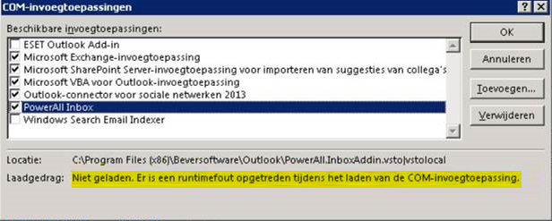

Het is mogelijk dat de outlook plug-in niet start op een oud systeem/server (in dit geval terminal server (2008 R2) met Office 2013 32-bits).
- De melding Er is een runtime fout opgetreden tijdens het laden van de COM-invoegtoepassing verschijnt:

Oplossing
VSTO runtime te (her)installeren, dat wil nog wel eens helpen bij dit soort oude systemen.